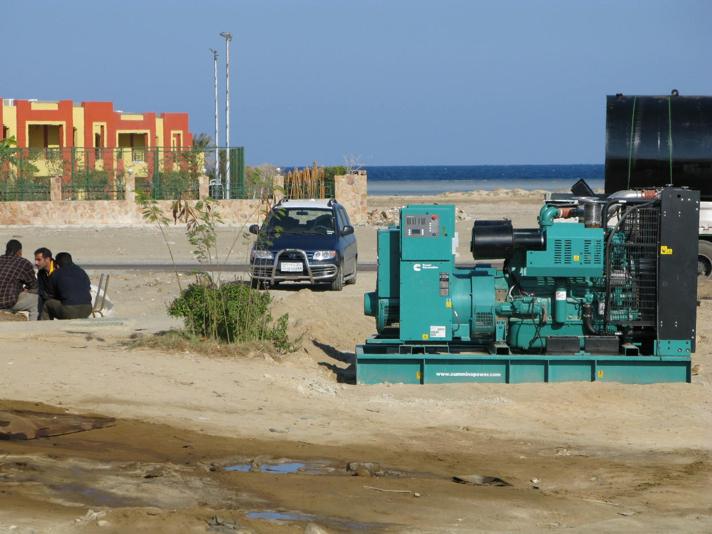

Comparison
Solar vs generator for an off-grid cabin
Solar is quiet and low-maintenance once installed. Generators are flexible and often cheaper upfront. The “best” choice depends on your cabin’s load pattern, winter sun, and how comfortable you are with fuel logistics.
Quick answer: when each option tends to win
- Solar usually wins if you use the cabin frequently and want quiet, predictable operation.
- A generator usually wins if you have occasional use, high burst loads, or limited sunlight in winter.
- A hybrid often wins when you want solar daily and a generator as backup for extended cloudy periods.
Solar vs generator comparison table
| Factor | Solar | Generator |
|---|---|---|
| Upfront cost | Higher for off-grid systems | Lower to get started |
| Ongoing cost | Low (maintenance and occasional replacements) | Fuel + maintenance |
| Noise | Quiet | Noisy |
| Reliability | Great in sunny seasons; limited by winter/cloud | Great if fuel is available |
| Maintenance | Low | Regular (oil, filters, storage) |

{kind=link}
A practical decision framework (no guesswork)
1) Your load profile
If your cabin has steady daily loads (lights, fridge, device charging), solar is a natural fit. If you mainly have occasional heavy loads (power tools, large pumps), generators can be more straightforward—or you may choose a hybrid plan.
2) Your seasonality
If winter use matters, plan for low-sun periods. That can mean a larger solar system, more battery, or a backup generator to cover extended cloudy stretches.
3) Your fuel logistics and tolerance for maintenance
Generator power is only as reliable as your fuel supply and upkeep. If you prefer “set it and monitor it,” solar often reduces ongoing work.
Total cost of ownership
Solar has higher upfront cost but low ongoing expenses. Generators are cheaper to start, but fuel, oil, and maintenance add up over time.
If you only use the cabin a few weekends per year, a generator may be enough. If you use it regularly, solar’s long-term value often improves.
Reliability and independence
Solar depends on weather and season, but it is predictable. Generators depend on fuel availability and maintenance. If your cabin is remote, consider how often you can refuel or service a generator.
Many owners choose a hybrid system to cover both predictable daily loads and occasional high-power needs.
Noise, emissions, and comfort
Solar is quiet and produces no on-site emissions. Generators are loud and require ventilation and safe fuel storage.
If your cabin is near neighbors or wildlife-sensitive areas, noise may be a deciding factor.
Fuel logistics and maintenance reality
Generators require regular oil changes, filter replacements, and occasional tuning. Fuel storage also has safety and shelf-life constraints.
If your cabin is remote, refueling can be a real inconvenience. Solar reduces that dependency but needs seasonal planning.
Winter performance and low-sun planning
Cabin solar can work in winter, but you may need more panels, more battery, or a backup generator. The key is to size for the worst realistic month, not the best.
A hybrid setup is common in winter-heavy regions: solar for daily loads and generator for extended storms.
Hybrid setups: a practical middle ground
A hybrid system can use solar for daily loads and a generator for backup or heavy tools. This approach often reduces the solar system size you need while keeping fuel use reasonable.
Hybrid systems still require careful wiring, safe transfer switches, and proper battery charging controls.
Comfort and lifestyle factors
If you value silence, solar wins. If you need reliable high power on demand, a generator can be more convenient. Many cabin owners choose based on how often they are onsite and how much time they want to spend maintaining equipment.
Consider your tolerance for fuel runs, noise, and maintenance schedules before you decide.
Cost planning checklist
- Upfront budget: solar costs more to start, but operating costs are low.
- Fuel logistics: generators require regular fuel supply and storage.
- Winter use: low sun months may require backup power.
- Maintenance time: generators need periodic service; solar needs less.
Example use case decisions
If you use the cabin a few weekends per year and mostly run tools, a generator can be the simplest option. If you use the cabin weekly and want quiet nights, solar often feels better long-term.
Hybrid systems can handle both patterns by using solar for daily loads and a generator for heavy bursts.
Permitting and local rules
Some regions have noise restrictions or fuel storage rules that affect generator use. Solar installations may also require permits, even for cabins.
Check local requirements before making a final decision.
Fuel cost estimate reminder
Generators are cheap to buy but not cheap to run. Estimate fuel use per hour and multiply by expected hours of use each season to compare against solar.
Reliability planning
If outages or long storms are common, consider a hybrid system or a larger battery bank. Reliability is about planning for worst-case weather, not just average days.
Maintenance logistics matter too: fuel storage, refueling in winter, and test starts each month are part of generator reliability.
Solar has fewer moving parts, but it needs basic upkeep like snow removal, clearing shade, and checking wiring after storms.
Noise and exhaust also matter if you share the cabin area, especially during long generator runs.
Quick summary
Solar offers quiet, low-maintenance energy; generators offer flexible power but require fuel and upkeep. Many cabins benefit from a hybrid approach. Most cabins still need a reliable backup plan for long stays overall.
Common mistakes to avoid
- Assuming solar “doesn’t work in winter”: it can, but it needs different sizing assumptions.
- Oversizing the inverter: it can force costly wiring and battery upgrades.
- Ignoring ongoing generator costs: fuel and maintenance add up and affect convenience.
- No backup plan: even solar-first cabins often benefit from a fallback option for long storms.
FAQ
Is solar worth it for an off-grid cabin?
Often yes if you use the cabin regularly. The value is quiet operation and low ongoing cost, especially when sized correctly.
Can I run a cabin on solar only?
Many cabins can, but winter conditions and heavy loads may require a larger system or a backup power plan.
What’s the simplest setup for occasional use?
A small solar setup for lights and charging plus a generator for heavy or infrequent needs is a common practical approach.
Does a hybrid system cost more?
Upfront, it can. But it can reduce the required solar and battery size if you accept occasional generator use.
When should I call a professional?
If you plan to integrate a generator with a transfer switch or have complex wiring needs, consult a licensed electrician.